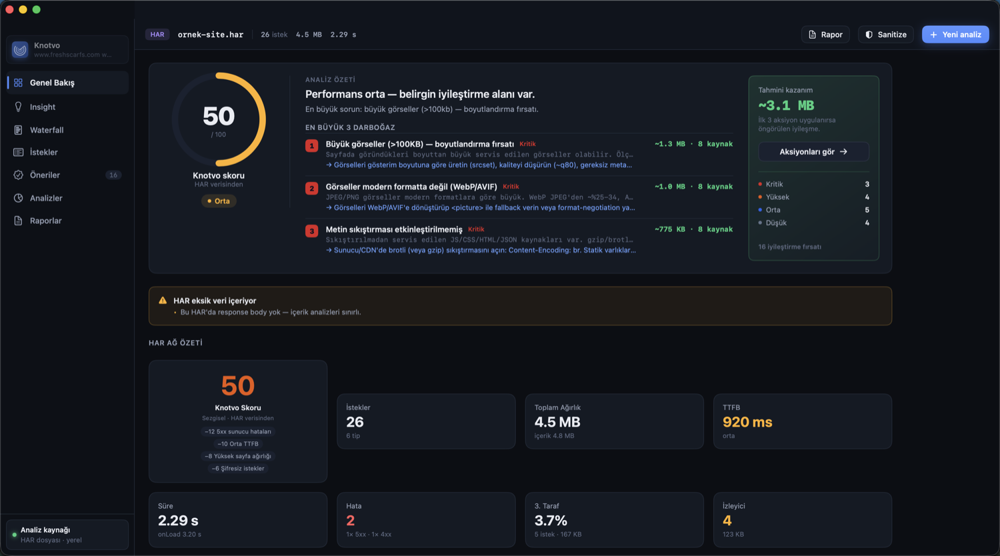
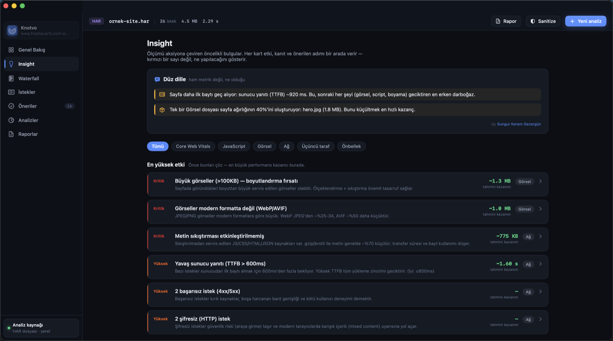
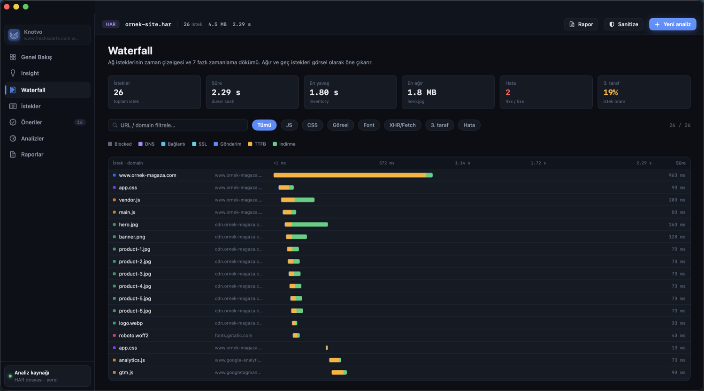
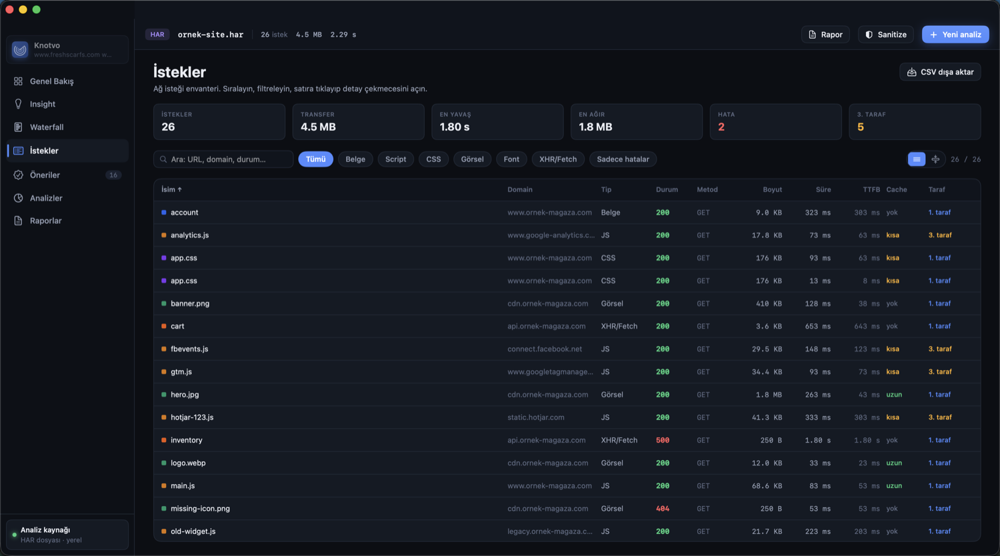
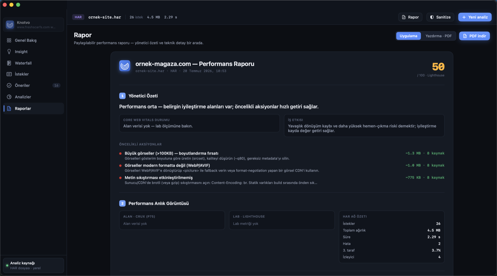

Knotvo, tarayıcının ağ kaydını (HAR) ve canlı ölçümü tek ekranda toplar, sonra sana ne yapman gerektiğini söyler. Karmaşık skorlarla değil, sade bir yapılacaklar listesiyle. Hesap açman gerekmez, kuyruğa girmezsin, verilerin bilgisayarından çıkmaz.
🍎 Yalnızca Mac (macOS 14 ve üzeri) için. Apple Silicon ve Intel destekli.

Performans skoru, en çok zaman kaybettiren üç darboğaz ve ilk üç işi yapınca elde edeceğin tahmini kazanç. Hepsi tek ekranda, renklerle önceliklendirilmiş.
Çoğu araç sana bir sürü sayı verir ve yorumlamayı sana bırakır. Knotvo bunun yerine sade cümleler kurar: "Sayfa ilk baytı geç alıyor, asıl sorun sunucu yanıtı" gibi. Patronuna ya da müşterine olduğu gibi gösterebilirsin.

Canlı bir adres girdiğinde Knotvo, Google PageSpeed Insights ve Lighthouse ile ölçümü çalıştırır, gerçek kullanıcı verisini (CrUX) toplar ve hepsini yaklaşık yarım dakikada tek rapora dönüştürür. Ne olduğunu adım adım görürsün.
Zaman çizelgesi (waterfall) yedi aşamalı bir dökümle her isteğin ne kadar beklediğini, ne kadar sürdüğünü ve ne kadar ağır olduğunu görsel olarak öne çıkarır. Ağır ve geç gelen istekleri anında fark edersin.

Boyut, süre, tür ve duruma göre sırala; URL veya alan adına göre filtrele. Bir satıra tıkla, o isteğin bütün detayını yan panelde aç.

Yönetici özeti ve teknik detay tek belgede. Tek tıkla PDF olarak kaydet, ekibine ya da müşterine yolla. Ajans sunumu için hazır bir çıktı.

Ölçümden paylaşıma kadar her adım burada. Bunların hepsini tek pakette sunan başka bir site hızı analiz aracı yok.
"Skor 100 ama Core Web Vitals başarısız" karmaşasını bitirir. Gerçek kullanıcı verisini Lighthouse ölçümüyle yan yana, hangisinin sıralamayı etkilediğini belirterek gösterir.
HAR dosyaları canlı oturum bilgisi taşır. Tek tıkla çerezleri, yetki başlıklarını ve token'ları temizler, paylaşıma uygun bir kopya üretir. Orijinal dosyana dokunmaz.
Yayın öncesi ve sonrası iki kaydı yükle, aralarındaki farkı gör. Ağırlık mı arttı, yeni bir hata mı çıktı, saniyeler içinde anla.
Birden fazla markayı yönet, her sitenin geçmişini tut, haftalık otomatik tarama kur. Skor düştüğünde haberin olsun.
Birkaç adresi aynı anda ölç ve tek tabloda karşılaştır. Kendi sayfanı benzerleriyle yan yana koy.
HAR analizi tamamen yereldir, hiçbir şey buluta gitmez. Yalnızca canlı ölçümde girdiğin adres Google'a iletilir, o da açıkça belirtilir.
Piyasada üç grup araç var ve hiçbiri tam olarak Knotvo'nun durduğu yerde değil. Aşağıda marka adı vermeden, tür bazında karşılaştırdık.
| Yetenek | Knotvo | Bulut tabanlı hız test araçları | Ağ yakalama araçları | Ücretsiz HAR görüntüleyiciler |
|---|---|---|---|---|
| HAR'ı yapılacaklar listesine çevirir | var | yok | yok | yok |
| İki HAR karşılaştırma | var | yok | yok | yok |
| localhost ve staging test | var | yok | kısmen | kısmen |
| Sır temizleyip güvenli paylaşım | var | yok | yok | temel |
| Hesap ya da giriş gerektirmez | var | yok | var | var |
| Kota ve kuyruk yok | var | yok | var | var |
| Veriler cihazda kalır | var | yok | var | değişir |
| Lab ve gerçek kullanıcı verisi bir arada | var | ayrı | yok | yok |
Kısaca: bulut araçları performans ölçer ama yalnız herkese açık adreslerde, hesap ve kotayla. Ağ yakalama araçları isteği gösterir ama performans yorumu yapmaz. Ücretsiz görüntüleyiciler HAR'ı açar ama öneri üretmez. Knotvo bu üçünün işe yarayan yanlarını tek uygulamada, cihazının içinde birleştirir.
Bir site hızı analiz aracıdır. HAR dosyalarını ve canlı ölçümleri inceler; ağ isteklerini, Core Web Vitals değerlerini ve üçüncü taraf yükünü analiz edip hepsini önceliklendirilmiş bir yapılacaklar listesine çevirir.
HAR analizi tamamen bilgisayarında yapılır, hiçbir şey yüklenmez. Yalnızca canlı ölçüm özelliğini kullandığında, girdiğin adres Google PageSpeed Insights'a gönderilir. Bu durum uygulamada açıkça belirtilir.
Evet. Tarayıcında HAR kaydı al, Knotvo'da aç. Bulut araçlarının aksine iç ve özel sayfaları da analiz edebilir. Canlı ölçüm ise yalnız herkese açık adreslerde çalışır.
Sanitize özelliğini kullan. Çerezleri, yetki başlıklarını ve token'ları temizleyip paylaşıma uygun bir kopya üretir. Senin orijinal dosyan olduğu gibi kalır.
Şu an Mac için var, macOS 14 ve üzeri. Apple Silicon ve Intel işlemcileri destekler.